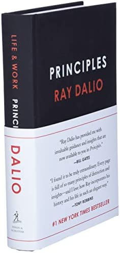

~ Life Changing Books ~
RICH DAD POOR DAD by Robert T. Kiyosaki

Rich Dad Poor Dad is about Robert Kiyosaki and his two dads—his real father (poor dad)
and the father of his best friend (rich dad)—and the ways in which both men shaped his thoughts
about money and investing. He says that his poor dad went to Stanford and earned a Ph.D.,
and his rich dad never finished the eighth grade. The book consists of 8 chapters, lessons
that everyone must learn. The central message conveyed by Kiyosaki is that you don’t need to
earn a high income to be rich.
“Financial struggle is often the result of people working all their lives for someone else.”
“Often in the real world, it's not the smart who get ahead, but the bold.”
“The more I risk being rejected, the better my chances are of being accepted.”
“Skills make you rich, not theories.”
CAN'T HURT ME by David Goggins
David Goggins shares how he transcended poverty and abuse to become one of the world’s top
endurance athletes. His story reveals how mastering your mind, hard work, and becoming friends
with pain can help you achieve the unimaginable.
“Human beings change through study, habit, and stories. Through my story, you will learn what
the body and mind are capable of when they’re driven to maximum capacity, and how to get there.
Because when you’re driven, whatever is in front of you, whether it’s racism, sexism, injuries,
divorce, depression, obesity, tragedy, or poverty, becomes fuel for your metamorphosis.”
The 4-Hour Workweek by Timothy Ferriss
The 4-Hour Work Week aims to give you more time and more mobility. These are two of the
defining attributes of what Ferriss refers to as the “New Rich.” The New Rich have abandoned
the deferred-life plan to create luxury lifestyles in the here and now, and Ferriss argues
that you can too.
Ferriss states that people don’t want to be millionaires; they want to experience what they
think only millionaires can buy. The question, therefore, is how can you achieve the lifestyle
of a millionaire, without having a million dollars in the bank? Consequently,
‘The 4-Hour Work Week’ is not about how to save, or about finding your dream job; it’s about
how to free up the most time, and automate your income.
“We spend too much time with those who poison us with pessimism, sloth, and low expectations
of themselves and the world.”
“Poisonous people do not deserve your time. To think otherwise is masochistic.”
START WITH WHY by Simon Sinec
There are leaders and there are those who lead. Start With Why is about a naturally
occurring pattern, a way of thinking, acting and communicating that gives some leaders the
ability to inspire those around themThose who truly lead are able to create a following of
people who act not because they were swayed, but because they were inspired. For those who
have an open mind for new ideas, who seek to create long-lasting success and who believe
that your success requires the aid of others, I offer you a challenge. From now on, start
with Why.
“The role of a leader is not to come up with all the great ideas. The role of a leader is to
create an environment in which great ideas can happen.”
The 7 HABITS OF HIGHLY EFFECTIVE PEOPLE by Stephen R. Convey
The 7 Habits Of Highly Effective People teaches you both personal and professional effectiveness by changing your view of how the world works and giving you 7 habits, which, if adopted well, will lead you to immense success. The original seven habits are:
- Be Proactive
- Begin with the End in Mind
- Put First Things First
- Think Win-Win
- Seek First to Understand, Then to Be Understood
- Synergize
- Sharpen the Saw
“To change ourselves effectively, we first had to change our perceptions.”
“Most people do not listen with the intent to understand; they listen with the intent to reply.”
How to Win Friends and Influence People by Dale Carnegie

How To Win Friends And Influence People teaches you countless principles to become a
likable person, handle your relationships well, win others over and help them change their
behavior without being intrusive. The tips are incredibly simple, which is why they’re so
powerful. All of them you can start applying right now, as how to win friends and influence
people carries a strong message of “be the change you want to see in the world.”
“It isn’t what you have or who you are or where you are or what you are or what you
are doing that makes you happy or unhappy. It is what you think about it.”
THINK and GROW RICH by Napoleon Hill
It examines the psychological power of thought and the brain in the process of furthering
your career for both monetary and personal satisfaction. Think And Grow Rich is a state of
mind. It exploits the power of thought to manifest strong desires and a definite purpose into
reality. Turning your all-consuming obsession (definite purpose) into a reality is not an
easy task. However, if the desire is strong and you’re willing to raise the stakes, you will
win. The author projects the following formula:
Desire + Ideas + Plans + Massive Action = Success
“Never quit. Never give up. Focus. Seek help. Make new connections. Take different approaches.
Seek additional resources to help you improve your job search skills.Persist and find people
who can help you to achieve your goals.”
PRINCIPLES by Ray Dalio
Based on his experience, Dalio identified five steps to success:
- Step One is to know your goals and run after them. What is best for you depends on your nature. You need to understand yourself and know what you want to achieve in life.
- Step Two is to encounter the problems that stand in the way of getting to your goals. These problems are painful. If poorly handled, some of them can lead to your ruin. But to evolve, you need to identify those problems and not tolerate them.
- Step Three is to diagnose these problems to get at their root causes. Don’t jump to solutions. Take a step back and reflect to distinguish the symptoms from the disease.
- Step Four is to design a plan to eliminate the problems. This is where you will determine what you need to do to get around them.
- Step Five is to execute those designs, pushing yourself to do what’s needed to progress toward your goal. A successful life consists of doing these five steps over and over again. This is your personal evolution, and you observe this process everywhere.
“You don’t achieve happiness by getting rid of your problems – you achieve it by learning from them.”
“If you’re not failing, you’re not pushing your limits, and if you’re not pushing your limits, you’re not maximizing your potential”